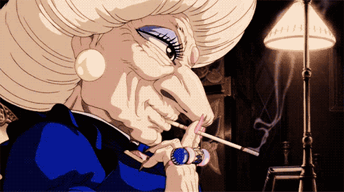
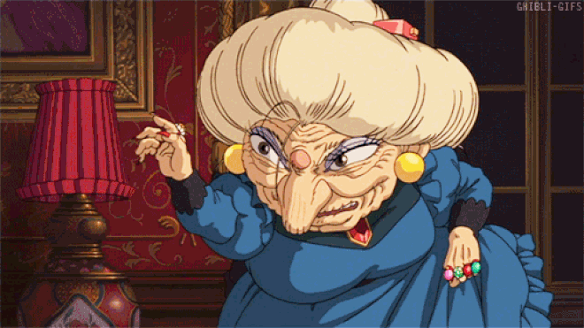

Юбаба

Юбаба (яп. 湯婆婆 Юба:ба, «старуха из купален») (сэйю: Мари Нацуки) — главная антагонистка фильма, хозяйка купален «Абура-я», того места, куда попала Тихиро. Страшная колдунья. Наставница Хаку. Всех держит в своих ежовых рукавицах, кроме своего родного сына, которого ужасно балует. Вершит тайные дела у себя в кабинете, посылает Хаку на задания, которые не отличаются безопасностью. Каждый вечер превращается в птицу и проверяет свою территорию. Юбабу часто можно застать за пересчитыванием золота и перебиранием драгоценностей, ей приятно чувствовать себя хозяйкой такого крупного предприятия, с немалым богатством. Всех, кто по какой-то причине не работает, Юбаба превращает в свиней.
